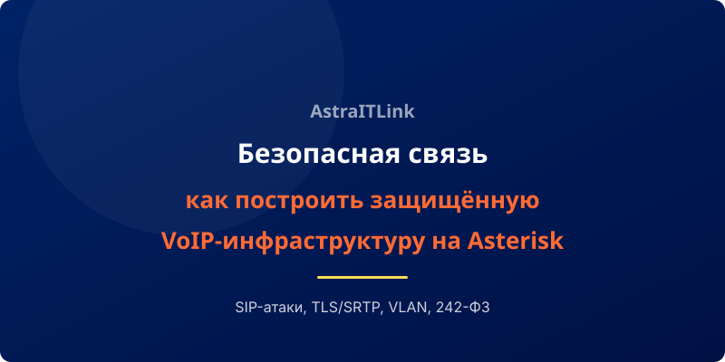

IP-телефония, при всех её преимуществах, открывает новые векторы для атак. SIP-флуд, фрод, перехват разговоров — это не теория, а реальные угрозы, с которыми сталкиваются компании ежедневно. Asterisk, благодаря гибкости настройки, позволяет построить защиту уровня Enterprise. Рассказываем, как это сделать.
Почему Asterisk выбирают для критически важной инфраструктуры
В отличие от закрытых АТС, Asterisk даёт администратору полный контроль над безопасностью:
- Доступ к исходному коду — возможность проводить аудит безопасности
- Гибкая настройка аутентификации и авторизации
- Поддержка современных криптографических протоколов
- Интеграция с внешними системами безопасности (Fail2ban, IDS/IPS)
Защита от SIP-атак
SIP-протокол уязвим к нескольким типам атак: регистрационный флуд, INVITE-флуд, подбор паролей, фальсификация Caller ID. Asterisk позволяет защититься на нескольких уровнях:
- Fail2ban: блокировка IP-адресов после N неудачных попыток авторизации. Настраивается за 30 минут.
- MD5-аутентификация: пароли никогда не передаются в открытом виде, используется хеширование.
- Ограничение регистраций: можно ограничить количество одновременных регистраций с одного IP.
- ACL (Access Control Lists): разрешение регистрации только с доверенных подсетей.
Шифрование голосового трафика и сигнализации
Без шифрования любой, у кого есть доступ к сети, может перехватить и прослушать разговор. Для защиты используются два механизма:
- TLS (Transport Layer Security): шифрует SIP-сигнализацию. Предотвращает перехват номеров, логинов и маршрутной информации.
- SRTP (Secure RTP): шифрует голосовой трафик. Даже если пакеты перехвачены, восстановить речь невозможно.
Включение TLS+SRTP в Asterisk — это правка двух конфигурационных файлов и установка сертификата. После включения производительность падает не более чем на 3–5%, что незаметно для пользователей.
Аудит и логирование
Asterisk ведёт детальные логи всех событий: регистрации, звонки, ошибки аутентификации, изменения конфигурации. Эти логи можно направлять в SIEM-системы (Splunk, ELK Stack, MaxPatrol) для централизованного мониторинга.
Настройка CDR (Call Detail Records) позволяет хранить полную историю звонков: кто, когда, кому звонил, длительность, использованный кодек, статус завершения. Эти данные необходимы для соответствия требованиям 242-ФЗ и для внутренних расследований инцидентов.
Изоляция VoIP-сети
Одна из лучших практик безопасности — полное разделение трафика телефонии и данных. Это реализуется через:
- VLAN (Voice VLAN): голосовой трафик изолирован на втором уровне (L2). Даже при компрометации рабочей станции злоумышленник не получит доступ к АТС.
- Firewall: правила, разрешающие SIP/IAX2 и RTP-трафик только между доверенными узлами. Все остальные порты закрыты.
- SBC (Session Border Controller): прокси-сервер для SIP-трафика, который скрывает внутреннюю топологию сети и фильтрует вредоносные пакеты.
Соответствие законодательству (242-ФЗ, 152-ФЗ)
Для компаний, работающих с персональными данными, Asterisk даёт возможности, необходимые для выполнения требований регуляторов:
- Логирование всех действий администраторов и пользователей
- Хранение записей разговоров в защищённом хранилище с разграничением доступа
- Шифрование данных при передаче и хранении
- Интеграция с СКЗИ (средства криптографической защиты информации) для ГОСТ-шифрования
Вывод
Безопасность IP-телефонии — это не разовое действие, а процесс. Asterisk предоставляет все инструменты для построения защищённой инфраструктуры: от базовой защиты от SIP-атак до соответствия отраслевым стандартам. Главное — правильно эти инструменты настроить. И это именно та задача, где опыт специалиста имеет решающее значение.